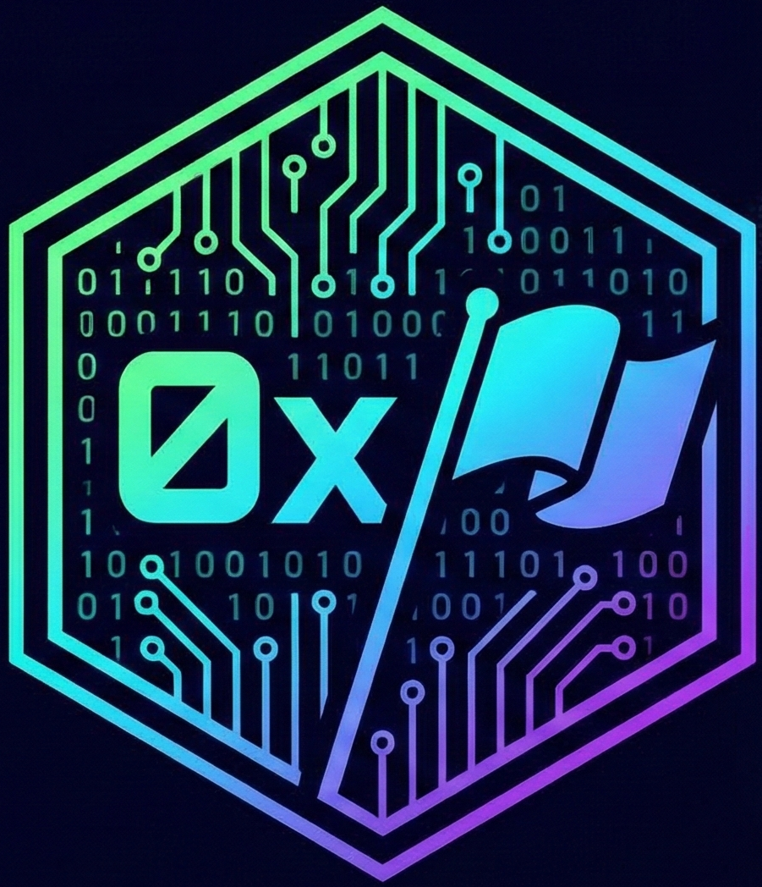

Herramienta creada para automatizar tus retos CTF. Céntrate en hackear, no en recordar sintaxis.
Generación automática de escaneos TCP/UDP y salida estructurada.
Fuzzing de directorios y recursos para GoBuster, FFuF y Dirsearch.
Generador reactivo de payloads y listeners con auto-encode.